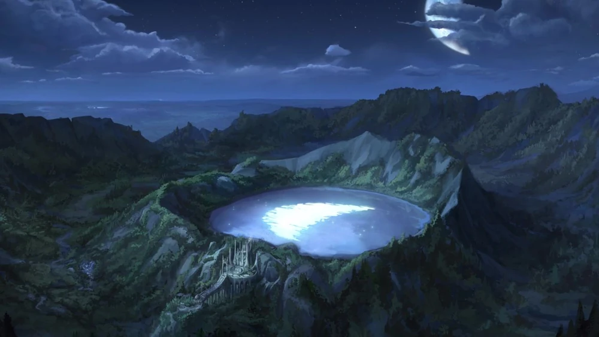

Księżyc
Opis
Magia księżyca czerpie z ducha i energii Księżyca, tworząc iluzje, zaklęcia ukrywające i połączenia z duchami. To źródło jest najsilniejsze podczas pełni księżyca, a jego Arkanum polega na tym, że pozory są prawdą rzeczywistości. Księżyc ma cykliczną siłę, odnoszącą się bezpośrednio do faz księżycowych. Istoty księżycowe, takie jak Księżycowe Elfy, mogą być prywatne i skryte.
Tajemnica
Tajemnica Księżyca polega na zrozumieniu prawdziwej natury związku między pozorami a rzeczywistością. Z reguły większość ludzi wierzy, że rzeczywistość sama w sobie jest jedyną prawdą, a pozory są zwodnicze. Jednak ci, którzy znają arkanum Księżyca, zdają sobie sprawę, że można naprawdę poznać tylko sam wygląd, a nigdy nie można dotknąć tak zwanej rzeczywistości, która leży poza zasięgiem własnej percepcji.
Splot
Splotem Księżyca jest Księżycowy Nexus, jezioro na szczycie góry, którego wody idealnie odbijają pełnię księżyca. Znajduje się ono na szczycie Przeklętej Kaldery w Katolis, niedaleko ruin świątyni Księżycowego Stonehenge, świętego miejsca rytuałów, gdzie starożytne Elfy Księżycowego Cienia wykorzystywały moc Nexusa, aby otworzyć ścieżkę do lśniącej płaszczyzny między życiem a śmiercią. Księżycowe Stonehenge zostało zniszczone przez same Elfy Księżycowego Cienia, gdy kontynent został podzielony, woląc je zniszczyć, niż ryzykować, że wpadnie w ręce ludzi.
Quiz